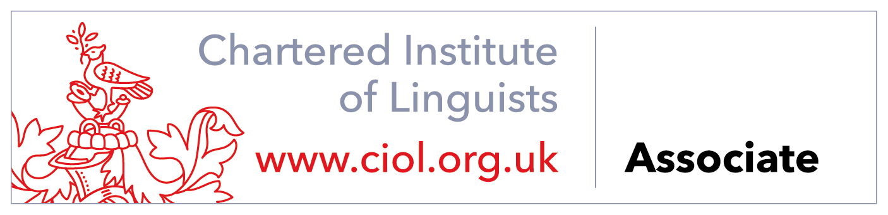

Литературный перевод
Проза, статьи, мемуары и словесность в общем и целом — с уважением к голосу, ритму, слогу и духу подлинника.
С русского и немецкого — на ясный, изысканный английский, с особым пристрастием к литературным произведениям.
Проза, статьи, мемуары и словесность в общем и целом — с уважением к голосу, ритму, слогу и духу подлинника.
Верный английский по британскому стилю, сохраняющий характер, замысел и особую манеру русского подлинника.
Тщательный английский для литературных, культурных и общих текстов — от современных сочинений до исторических материалов.
Приведение рукописей и переводов к ясности, последовательности, изяществу и стилю.
Когда того требует характер текста, я могу передать его и более историческим, книжным английским, не навязывая старому голосу современных оборотов.
Перевод — не только обмен словами между языками. Это верная передача текста: его тона, характера, предпосылок и способа видеть мир.
Я перевожу преимущественно с русского и немецкого на английский, с особым интересом к литературе и к материалу, богатому культурой. С равной охотой берусь и за документы самого разного рода.
Ассоциированное членство (Associate) в Chartered Institute of Linguists (ACIL).

Для заказов, вопросов или беседы о рукописи либо ином документе — пишите, я с удовольствием отвечу.
info@streatfieldtranslation.com